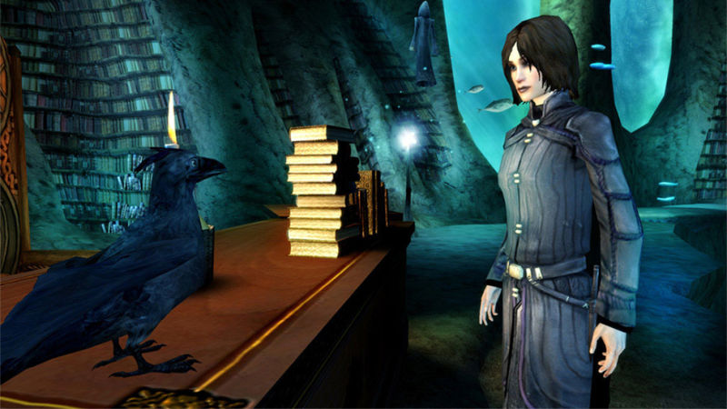

Sjedi 1! - Recenzije PC igara
Nemamo vremena za igranje igara i nismo kompetentne za ocjenjivanje... ali ćemo svejedno to uraditi!
Dreamfall - The last journey
Dreamfall – The longest journey (2006) nastavak je na The longest journey koju je Funcom objavio 1999. Iako sam je počela igrati nedugo nakon što je bila dostupna kod nas, u to doba nisam imala pristup internetu niti walkthrough-u, zapela sam na jednom dijelu i uskoro mi više nije bila zanimljiva. Nakon skoro 10 godina, ponovo je pokrećem. Iako obično preskočim svaku moguću animaciju, u istraživačke svrhe sam ovog puta strpljiva – priča je dva svijeta, poznatom i naprednom te nepoznatom i punom sjena. Grafika igrica mi se činila puno bolja u mom sjećanju nego u stvarnosti, ali samoj priči ne smeta. Zoe mi je i dalje jedan od najdražih likova. Kontrole su također OK. Uz zanimljive detalje i osrednje smješne komentare same Zoe uglavnom je lako shvatiti u kojem se smjeru kretati i što je trenutni cilj. S obzirom da nisam igrala prvi nastavak, nisam primjetila nikakve probleme pri razumjevanju čitavog zapleta, igrice su dosta nezavisne iako se tiču istog svijeta i likova. Dosta je slobode u vidu kretanja i konverzacija, moguće je izabrati jedan od više ponuđenih odgovora.
Cijela igra je sjećanje Zoe Castillo koja se nalazi u komi. Priča počinje u Starku, u Zoe-inom domu. Dobija čudnu poruku od djevojčice Faith kroz TV da nađe i spasi April Ryan. Nedugo nakon toga njen prijatelj i bivsi decko koji je istraživao projekt Achera nestane. Ovdje su uključene razne zagonetke, cjenkanja, putovanja u Newport, Japan te naposljetku u Arkadiju – „prelaženje između svjetova“.
Nakon toga fokus prelazi na April u Merkuriji, koja nalazi Zoe i oslobađa je, ne znajući još uvijek ništa jedna o drugoj. Pobunjenički kamp gdje je April je napadnut, a ona ranjena.
Zoe ponovo „prelazi“ u Stark i nalazi malu Faith koja je bila zatočena kao pokusni kunić za sanjače. Helena Chang moli Zoe da nagovori Faith da napusti duhom ovaj svijet. U sve su uključeni WAT agenti i sam projekt Alchera. Helena Chang i jeste osoba koja smješta Zoe u komu. Jedina zamjerka je– tužan kraj ! Priča je lijepa i zanimljiva toliko da totalno zaboravite da je Zoe uopće bila u komi.
Godina izdavanja: 2006
Minimalni sistemski zahtjevi:
- Pentium 4 1.6GHz ili Sempron 2800+
- 512 MB RAM-a
- Win XP
- DirectX 9
- 7GB prostora
Ocjena: